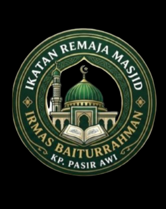

Visi
Menjadi masjid yang makmur, nyaman, dan menjadi pusat pembinaan umat.
Selamat datang di website Masjid Jami Baiturrahman. Semoga menjadi jembatan informasi dan silaturahmi bagi seluruh jamaah.
Tempat beribadah, menuntut ilmu, dan mempererat persaudaraan.
 Masjid Jami Baiturrahman
Masjid Jami Baiturrahman
Masjid Jami Baiturrahman hadir sebagai tempat bagi masyarakat untuk melaksanakan ibadah dan membangun kehidupan islami yang rukun, damai, serta penuh kepedulian.
Melalui kegiatan keagamaan dan sosial, masjid diharapkan terus menjadi pusat kebaikan bagi jamaah dan lingkungan sekitar.
Informasi lokasi →Menjadi masjid yang makmur, nyaman, dan menjadi pusat pembinaan umat.
Meningkatkan kualitas ibadah, pendidikan keislaman, dan kepedulian sosial.
Menumbuhkan ukhuwah Islamiyah dan semangat gotong royong antarjamaah.
Ruang untuk beribadah, belajar, dan saling menguatkan.
Melaksanakan salat lima waktu dan menghidupkan suasana masjid.
Kegiatan belajar agama untuk menambah ilmu dan memperkuat keimanan.
Peringatan hari besar Islam dan kegiatan kebersamaan masyarakat.
Mendorong kepedulian, gotong royong, dan saling membantu.

Wadah generasi muda untuk belajar, berkarya, dan ikut memakmurkan Masjid Jami Baiturrahman.
“Sebaik-baik tempat di sisi Allah adalah masjid.”
Mari bersama memakmurkan rumah AllahSilakan datang untuk beribadah dan mengikuti kegiatan bersama jamaah.
Alamat
Kp. Pasir Awi RT/RW 003/001, Desa Pudar,
Kecamatan Pamarayan, Kabupaten Serang,
Provinsi Banten.
Kontak pengurus
Informasi kontak dapat ditambahkan oleh pengurus.